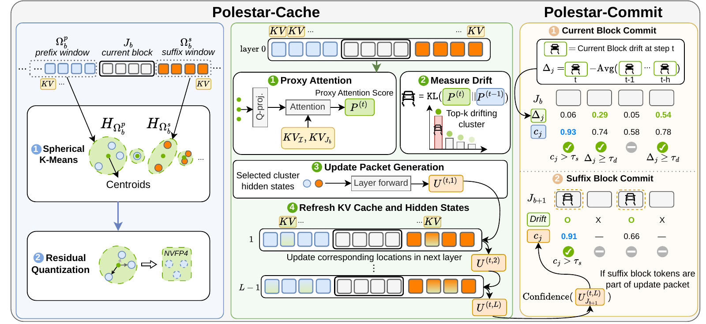

NeurIPS 2026 / Training-free inference
Polestar
Drift-Aware Cache Calibration and Token Commitment
for Efficient Inference of Diffusion LLMs
1 Georgia Institute of Technology · 2 Intel AI Group
* Equal contribution
Representation drift becomes a shared signal for
selective cache calibration and early token commitment.
Up to
3.7×
higher throughput
Up to
+10.73pts
accuracy improvement
Reaching
3.67
tokens per forward pass
Reported across the paper’s mathematics and coding benchmarks. Accuracy gains are in percentage points. See results
Generation comparison
Compare Baseline, Fast-dLLM, and Polestar on the same prompt.
Illustrative responses; paper metrics and adjustable Replay TPS are shown separately.
Shared prompt
Ready to replay
Current-block commit◇Polestar suffix commitSeparated positions can commit together.
Authored examples, not recordings of a three-method run. Paper metrics are benchmark averages from the paper; Replay TPS controls tokenizer-token timing. Current and suffix commits share one total commit budget. Refresh selections and commit groups are schematic, without measured drift or confidence values.
The observation
The context changes.
So do the representations.
Diffusion LLMs refine a masked response with bidirectional attention. Revealing a new token changes the context available to other positions—even when those tokens stay fixed.
Polestar treats this representation drift as useful information: it reveals where cached states need calibration and helps identify predictions ready for commitment.
A new token reshapes its context.
Inspired by the paper’s motivating example.
Where should the cache be updated?
Rank the drift of cluster-level attention proxies and selectively refresh the relevant cached representations.
Which tokens are ready to commit?
Combine current-token drift relative to recent history with confidence to increase decoding parallelism.
Interactive explanation
Follow the signal.
See how a sparse refresh step connects cache calibration and token commitment.
Polestar / method walkthroughIllustrative walkthrough of the paper’s method. Token positions are schematic.
Reuse context. Recompute the block.
Sparse refresh follows decoding progress. Drift prioritizes the update locations.
The complete method
Polestar-Cache & Polestar-Commit
Connect the walkthrough to the original diagram.

Polestar-Cache and Polestar-Commit.
The full diagram from the paper.
Results
Accuracy and throughput,
together.
Mathematics, code, and vision-language reasoning.
Explore the results
Choose a model and generation length. Compare all three benchmarks.Compare all three benchmarks. Select a method to highlight its measurements in the table.
Paper measurements · NVIDIA A100 80GB · Batch size 1. Source data
Results across all four models
| Model | Benchmark | Accuracy (%) | TPF | TPS |
|---|
Use Polestar
Existing checkpoints.
No additional training.
Run text and image-conditioned generation with the released model presets.
Examples
Try it on your own inputs.
Install Polestar, choose a model preset, and generate.
Citation
Cite Polestar